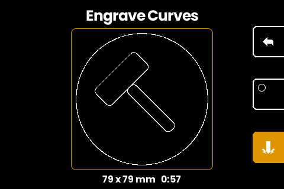
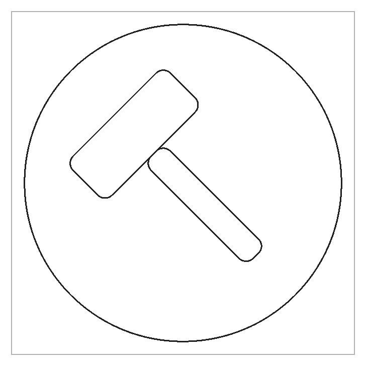
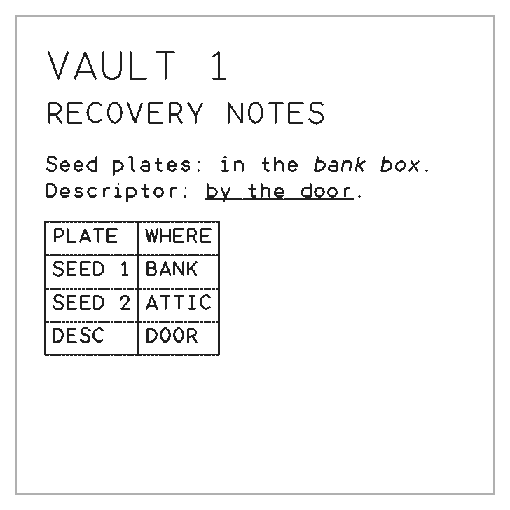
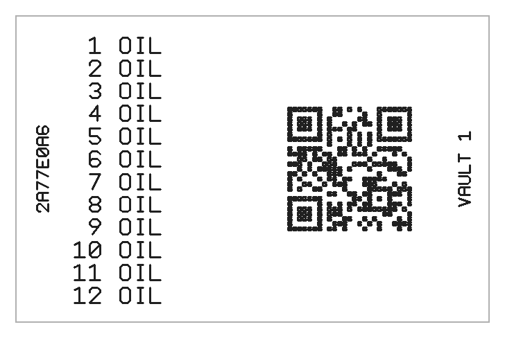
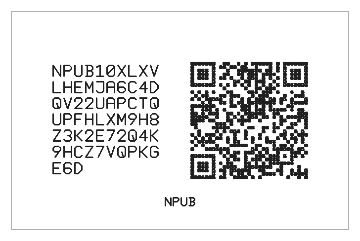
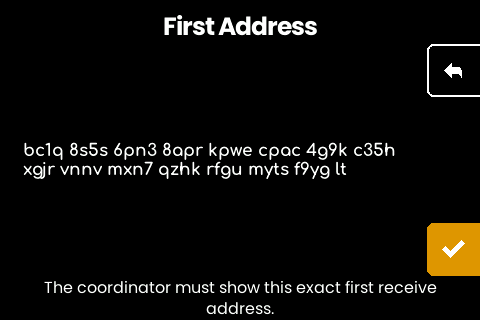
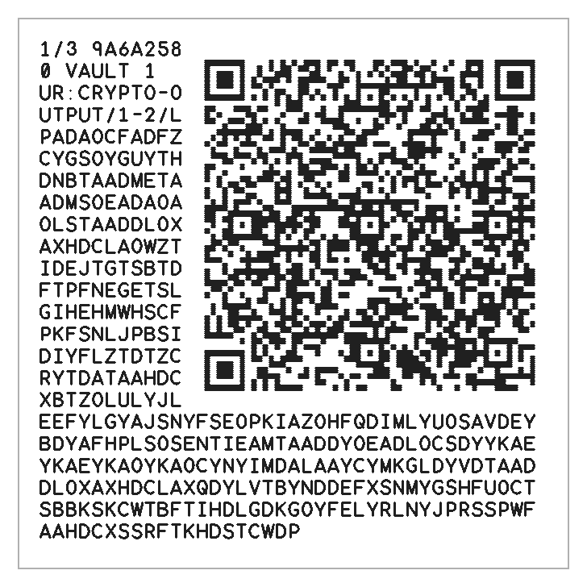

A FIRMWARE FORK FOR THE SEEDHAMMER II
Engrave anything. SeedHammer EDITION, a firmware fork for the SeedHammer II.
SeedHammer EDITION keeps every backup flow the stock machine verifies, then opens it up. Draw it, type it, tap it over NFC. The machine shows the exact strokes it will cut. You approve. Steel keeps the rest.
The real firmware, compiled to WebAssembly. Runs in your browser. Zero hardware.
§1
Try the whole machine before you touch one.
The emulator is the firmware. Studio boots the machine's real GUI, compiled from the firmware repo into 8.7 MB of WebAssembly and painted on the same 480 × 320 screen the device carries. Drag to navigate; the machine is a touch device.

Demos sit on the number keys. Press 1 for a 24-word BACON seed. Press 3 for a 2-of-3 descriptor those demo seeds cosign; press 1 then 3 to see one wallet from both ends. The seeds are nonsense on purpose. Nobody mistakes BACON, 24 times over, for their own backup.
When you want metal, Android Chrome writes the plate over Web NFC, nothing to install. On a desktop, a small local bridge drives an ACS ACR122U reader. Studio installs as an app and, once the firmware has been fetched, works offline.
§2
Anything you can draw or type.
A new NDEF record type, seedhammer.com:curves, carries vector drawings and rich text. The firmware re-fits incoming geometry to its own spline, plans its own timing, and rasterizes a preview on screen. Nothing engraves until you approve that image.
Plain text engraves too, typed on the machine's own three-layer keyboard or written from any phone NFC app. The firmware sets it at the largest of six sizes (6.0 down to 3.0 mm) whose grid holds the whole text: up to 1,144 characters on the square plate. The font covers all 95 printable ASCII characters. A Nostr key, npub or nsec, engraves as a NIP-19 key plate; for a secret key the device derives the public key and offers its plate second.




The small 85 × 55 mm plate rides a printable adapter jaw; the model is in the repo as 3MF (ready to slice) and STEP (the CAD solid).
§3
Your hand draws the seed.
The machine does not generate seed phrases. You do, from dice, tiles or coins. What it adds is the one word you cannot draw: the last word carries a checksum, so only 8 of the 2048 words complete a 24-word phrase. Type your 23 drawn words and the machine computes the final one, taking the 3 bits it is free to choose from the RP2350's hardware random number generator.
Once the seed plate is cut, the machine derives the wallet descriptor and shows it as a QR to scan into a watch-only wallet. The seed never leaves the machine and never gets typed into a computer.
A BIP39 passphrase is optional, carried on a plate of its own, and uncapped. Trezor stops at 50 characters. Ledger and Jade stop at 100, BitBox02 at 127, Keystone at 128. BIP39 sets no limit, so this machine sets none either.
§4
Multisig, in steel, no computer in the middle.
MULTISIG WALLET in the input menu assembles an M-of-N wallet on the device. Name it, pick the quorum, then add each cosigner: typed words, a seed tapped over NFC, or a bare account key from a cosigner whose seed never touches this machine. The descriptor leaves by camera as an animated code for Sparrow or any UR-capable coordinator, and both ends compare the wallet's first receive address on screen before anything cuts.


An existing multisig can be split instead: SPLIT cuts one share plate per cosigner, each fragment wrapped around a QR under a header naming its plate number and cosigner fingerprint. Any signing quorum of plates rebuilds the wallet in Sparrow as one animated code. The partition covers every n-1-of-n and n-of-n quorum plus 2-of-4 and 3-of-5; the rest fall back to full descriptor copies, where any single plate recovers the wallet.
§5
Sign your own firmware.
Fork builds are unsigned, and a stock machine boots only SeedHammer-signed images. That refusal is the ownership step. sh2key runs the whole ceremony: it mints a signing key, fuses it into a spare RP2350 boot-key slot, signs your build in-process and flashes it. Official firmware stays bootable beside yours.
Exactly three commands can burn fuses. The manual names each one, and every irreversible write sits behind a readback-verified gate and typed consent. The flash list only offers images the board's own keys accept, so a rejected image cannot be written by accident.
The signing key backs up like everything else here: as 24 BIP39 words on the machine's own steel, restoring to a byte-identical PEM. A mis-read word is found by fingerprint search.
§6
Built like an instrument.
Round glyphs used to engrave egg-shaped: the O planned 2.89% asymmetric. An interpolating spline fitter cut that to 0.22%; rotating each loop's seam to where curvature hides it took bench circles to 0.000%. Constant-velocity cruising holds the needle through arcs: a planned 70 mm circle runs 27.6 s against the hardware's 27.5 s floor.
Capacity went the same way. A 973-character 5-of-7 descriptor engraved at 3.0 mm and transcribed back from a photo with zero character errors, and the QR fallback ladder reaches about 1,500 characters in the QR's compact charset where stock firmware fails outright past its one fixed layout.
| Measurement | Result | Source |
|---|---|---|
| Roundness error, planned toolpath | 2.89% → 0.22% → 0.000% | bench record, fork-vs-upstream.md §5 |
| 5-of-7 descriptor, engraved and transcribed back | 973 chars, 0 errors | bench record, fork-vs-upstream.md §1 |
| QR-backed descriptor capacity | ~1,500 chars | README; bench record |
| Adversarial NFC parser probes / findings | ~100,000 / 0 panics | audit record, 2026-08-12 |
| Firmware-rendered manual screenshots, drift-gated | 41 | cmd/docs, CI |
| Reproducible builds via the nix flake | bit for bit | README, Building from source |
The security audit of 2026-08-12 read every NFC-reachable parser end to end: about 100,000 adversarial probe iterations, zero panics, zero out-of-bounds reads. Seed, codex32 and nsec plates engrave in constant time and source order, closing a stroke-order side channel; a fuzz corpus pins the invariant. The preview you approve rasterizes from the same planning walk that drives the needle.
The hero above regenerates from the machine's glyph tables on every deploy. Every other number names its bench record.
§7
Ordering information.
| Item | Where | Terms |
|---|---|---|
| The SeedHammer II machine | seedhammer.com | sold by SeedHammer, the original maker |
| This firmware | Gangleri42/seedhammer | free · public domain · sign it yourself |
| Studio | gangleri42.github.io/studio | free · any browser · works offline |
| Small-plate jaw | hardware/small-plate-jaw | 3MF ready to slice · STEP solid |